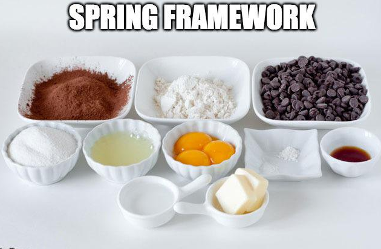

Spring Framework
Delicious Software Dev
© We Can Code IT, LLC
Getting started with Spring Boot
Putting it all together

“You can’t make a delicious cake without the correct ingredients!” - Scott Webb
What is Spring Boot and Why should I use it?
- You want to be a Software Developer right?
- Gives you the ability to produce modern enterprise applications using a convention over configuration design principle
- Comes with 40+ starter modules:
- Database Connections
- Web Services
- Social Network Integration
- Monitoring Libraries
- Logging
- Allows for end-to-end application that is production ready
Terminology
- Bootstrap: To quickly Start up
- Stand-alone Application: a program that does not require operating system’s services to run
- Spring Framework: Makes it easy to create stand-alone, production grade Spring based apps you can “just run”
Annotations
- In Spring we will be creating a series of @Annotations
- Some Annotations are not Spring specific
- @Override
- Some Annotations are Spring Framework specific
- @Component
- Annotations are meta-data for classes
- You can go through Spring documentation and Cookbooks like the Spring Boot Cookbook to get a good idea about the framework
RESTful Web Service
- REST: Representational State Transfer
- Rest Controller: Executes when a user makes a request
Spring MVC Framework
- Spring Framework Tutorial
- The Spring Web MVC framework provides Model-View-Controller (MVC) architecture and ready components that can be used to develop flexible and loosely coupled web applications. The MVC pattern results in separating the different aspects of the application (input logic, business logic, and UI logic), while providing a loose coupling between these elements.
- The Model encapsulates the application data and in general they will consist of POJO (Plain Old Java Objects)
- The View is responsible for rendering the model data and in general it generates HTML output that the client’s browser can interpret.
- The Controller is responsible for processing user requests and building an appropriate model and passes it to the view for rendering
Which Ecosystem…Maven or Gradle?
- With Google choosing Gradle as the new build system for Android SDK and mature libraries like Spring, Hibernate, Grails, Groovy etc. already using it to power their builds, there is no doubt that Gradle is becoming de-facto build system for the Java ecosystem.
- Maven vs. Gradle